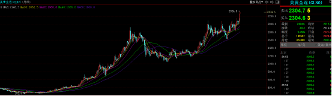
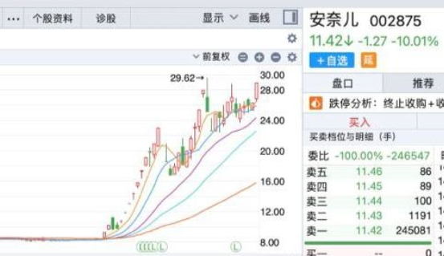
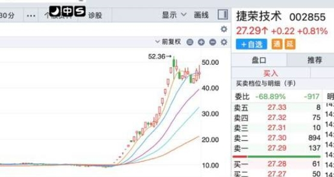
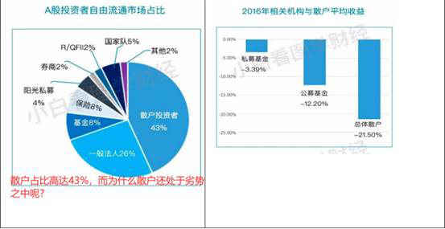
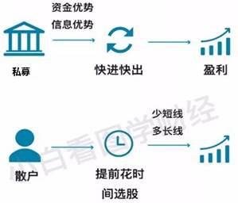
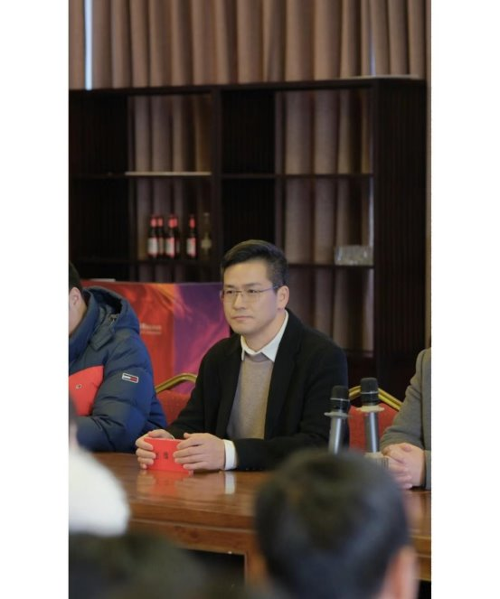
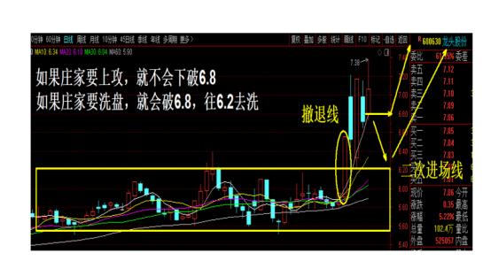
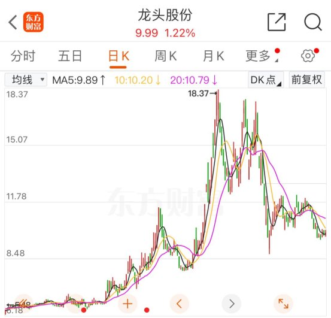
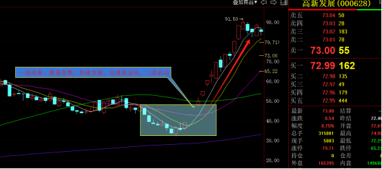
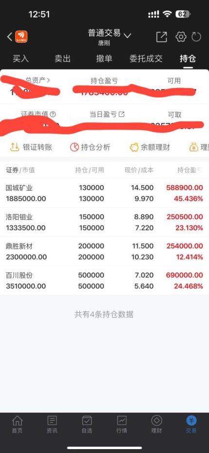

股市热点： 2024千禧龙年，国运之年，“国九条3.0版”重磅落地，强国牛市来袭！唐刚即将带领【粉丝团】开启联合建仓，预计回报40%以上！
昨天 09:15:40丨 阅读(160452+)
2024千禧龙年，国运之年，“国九条3.0版”重磅落地，强国牛市来袭！唐刚即将带领【粉丝团】开启联合建仓，预计回报40%以上！
2024年，美联储主席鲍威尔也在暴力加息两年之后，今年准备进行降息！大部分散户只能看到表象，那么降息到底会对全球金融市场及A股造成什么影响？此时此刻，越早看到的朋友们福报越浓！
其实市场的逻辑很简单，美联储降息，将会导致流通美元增多，购买力增强！那么，流向市场的美元究竟会去往何方？
无非就是两个方向：
1、被低估的市场（更有升值空间）——A股；
2、波动大的市场（波动越大机会越大，没有波动也代表没有空间）——贵金属、数字货币等！
所以现在市场出现了一个很奇怪的现象，在美联储即将降息的消息刺激下，反而出现了贵金属、美股、数字货币等同步上涨的奇怪现象！其实能读懂以上文字的朋友，相信现在已经不觉得奇怪，反而能看到A股市场未来的机会！
大家可以通过贵金属黄金白银的走势看到，一路高歌猛进，创出历史新高，这一切态势迹象表明，2024年，资本市场将会迎来全新的多头行情！

1992年邓公南巡，改革开放带来日新月异变化，经济更是蓬勃发展，金融市场也在实体经济的需求下崭露头角，作为改革开放的前沿阵地——广州，【唐万才先生】携手【江氏家族】，共同创立了【广州薪象投资有限公司】，乘上改革开放的东风，作为新中国成立之初第一批企业家，唐老先生带领着团队积极进取，给地方经济发展带来了巨大的帮助，随后公司在政府的细心呵护下茁壮成长，仅仅3年就成长为集合金融，港口，地产，贸易，制造业与一体的集团化企业。
虎父无犬子，唐万才之子唐刚，上海财经大学经济学硕士，1979年出生于广东省，自小便受到唐老先生的言传身教，后被送往海外深造。唐刚不仅有系统的金融知识理论，更有深刻符合国情的实际操作办法，硕士毕业以后，曾在美国华尔街继续深造，后担任过东北证券、广发证券等券商研究员、公募、私募操盘手。
2021年，唐刚被家族召回，携手江家翘楚一起吸收整合散户力量，组建粉丝团体，准备打造铁血军团开启联合散户坐庄。
后经过共同指导培训，【粉丝团】于2022年联合操作【安奈儿】，虽然首次联合坐庄困难重重，但皇天不负有心人，获得了圆满成功。所有成员均获得了超150%以上的回报！

之后，【粉丝团】成员资金得到壮大，经验更加丰富，成员更加团结，总体操盘资金也变得更加充裕！
于2023年8月，再次联合打造【捷荣技术】，从9.02元上涨至52.36元，唐刚带领的粉丝团出货后，依然受到了诸多机构和游资追捧，并未因为【粉丝团】出货伤害到市场中的散户！可谓是名利双收！

现如今，【粉丝团】大多数成员已实现财富自由，不夸张的说，只要不掉队，应该都是未来的亿万富翁。未来在股市翻云覆雨，一切皆在自己人的掌控之中！只有羡慕！
所有【粉丝团】成员都知道，三年来，基本都是唐刚一个人在默默付出，没有唐刚，就没有可能实现这两次坐庄的完满成功，其中种种艰辛，只有跟着唐刚的粉丝团的兄弟姐妹们懂。
但天不遂人愿，2023年底，家族安排的原因，江家被安排独自带着两人含辛茹苦亲手打造的【粉丝团】，去做新的个股和项目了。唐刚却被父亲唐万才安排重新打造一个【全新的粉丝团队】。
孟子曰：“天将降大任于是人也，必先苦其心志，劳其筋骨，饿其体肤，空乏其身，行拂乱其所为，所以动心忍性，曾益其所不能。所以，一切只能重新开始，但是，未来可期！
2024年初春，正值万物复苏之际，唐刚再次发布召集令，以打造2024《第一妖股》为目标，通过各大传媒平台召集愿意了解、愿意学习、愿意认可、愿意抱团、乐于分享、有善根的粉丝群体，一起做大做强，再创辉煌！
唐刚全新打造的【粉丝团】正处于招纳筛选阶段，只寻找有理想一起抱团的同伴，寻找愿意虚心学习的伙伴！想加入的朋友可以扫描下方二维码，添加【粉丝团】接待人员，只招收2000人，人满即止！
小编作为曾经【老粉丝团】的一员，现在能做的就是尽力帮唐老大做一下宣传，尽快帮助唐老大完成【全新粉丝团】的组建！
什么是联合坐庄？
聚沙成塔，聚散成庄，曾经吃过股市亏的人都知道，股市的水有多深？单枪匹马跟主力抗衡，太难，如果能跟私募一起拉盘来坐庄，抱团取暖，正所谓一人拾柴火不旺，众人拾柴股价高！从而更好的达到人脉、以及资源共享，做市场的赢家。大家一起有回报，共同成为私募团队，做更多的投资。才可以早日实现财富自由，与企业共同成长！
主力和机构为什么可以实现更大的投资回报？

散户亏损的主要原因：虽然散户在股市的占比很高，但是资金非常分散，平均下来每个散户的资金和机构对比相差巨大根本无法撼动股市，因此，私募机构在资金量上占据很大优势。虽然散户也是股市的主力军之一，但是散户从来都是单打独斗，单兵作战，没有凝聚力，亏损严重！

主力机构往往强于散户的原因：因为主力和机构都有自己的团队！有人才，有资金，有团队，团结就是力量！
在这个风雨飘摇的股市里面，散户作为规模庞大的弱势群体，散户不团结，将不会有任何的改变，还是被吸血的载体，主力庄家继续当寄生虫。只有团结起来才能打破中国股市不同于国外股市的一切不平衡，打破一切不公平的制度。从而改变结果，改变现在亏损的命运！
在市场逐步筑底的过程中，千股一图，所有个股打回原形，重回同一个起跑线，如何分辨李逵跟李鬼？抓住一只妖股胜过一个牛市！
具内部团队介绍【薪象粉丝团】将布局一只波段个股，目前已经筹集结束，即将正式开启建仓！预计回报40%以上！资金抱团的好处，团队的好处，无疑凸显而出！
散户如何参加联合建仓？扫描下方二维码，添加：【薪象粉丝团】接待人员，报备过后可进入唐刚打造的【纯绿色交流群】，将会有机会参加联合建仓布局！
同时，殷切希望不再是任市场收割的小散之时，可以帮助身边的小散，愿股市能够再少一位散户。如今多重因素集合，市场即将迎来爆发点，抓住机会，与庄共舞！
唐刚语录：生活在这个年代已经很幸福了，躲掉了被饿死甚至易子相食的时代，生活在这个不需要担心温饱的时代，就必须不能辜负这个时代，需要强大自己的思想，首先努力做好自己，然后再去帮助正在经受磨难的人。虽然每个人都是自私的，但是应该有理想有抱负，在满足自己的同时也尽力去满足需要帮助的人！

唐刚在一次采访中说道：技术利润今常在，少有公益暖人心！股市不是创造财富的地方，而是财富重新分配的地方！
所以唐刚所带领的【粉丝团】每次成功获得大的回报后都会抽出部分利润来捐助慈善事业！
唐刚全新打造的【粉丝团】正处于招纳筛选阶段，有善心想加入的朋友可以扫描下方二维码，添加【粉丝团】接待人员，只招收2000人，人满即止！
唐刚的一生可以用精彩也可以用命运多舛来形容，虽然出身还算不错，但唐万才【穷养儿】的思想深深的影响着唐刚的青春时代！然而唐刚本人又有着工作后就不依靠家里的思想！从实习开始：
住过寒冬的板房，寒天雪地盖三层被子都不能保暖！一日三餐需要计划消费！
但也经历过富裕时消费大手大脚，困难时学会了节约每一滴水！
终也懂得了什么才是真正的大手大脚，什么时候应该大手大脚！
其中辛酸只有经历过的人才懂！
但人生如果不经历风雨绝对称不上完美！譬如说，唐刚和江家首次联手打造的【粉丝团】，内部多多少少都出现过问题。两人经历过怀疑、诋毁、谩骂，甚至至今依然还存在一些后遗症，那就称不上完美！但唐刚对自己的严苛要求，以身作则的行为，却是一直在往完美的方向奋斗！相信不久将来，唐刚再次重新打造的【粉丝团】也一定会更加趋于完美！
有【前粉丝团】成员和唐刚开玩笑的说，是不是要把这次【粉丝团】的名称命名为【完美粉丝团】？通过前粉丝团成员的话语，对于唐刚的风格也可见一斑！
唐刚全新打造的【粉丝团】正处于招纳筛选阶段，只寻找有理想一起抱团的同伴，寻找愿意虚心学习的伙伴，寻找有善心的有缘人！想加入的朋友可以扫描下方二维码，添加【粉丝团】接待人员，只招收2000人，人满即止！
唐刚语录：不注重个人资金量多少，更注重执行力大小，不高看富二代，不低看穷励志！经历过贫穷，会更希望富有！财富自由，只是实现人生价值的第一步！
【粉丝团】成员招满之前，唐刚及公司投研团队，会带领粉丝们【每日早盘抱团打板】，此外还会有一些【消息票】、【跟庄波段票】等。待成员初次集结并筛选完毕后，将会开设【战前培训课程】讲解庄股及市场热点、潜力个股，一边教授自己多年总结的技术战法，一边再次筛选粉丝，还会对【粉丝团】有执行力和信任度的成员进行【战前集训】，方可正式开启抱团坐庄之旅！
想领取的朋友可以扫描下方二维码，添加【粉丝团】接待人员，只招收2000人，人满即止！
在2024年这关键的一年，2024为何关键？离火九运，不论是对国家还是对个人而言，2024都是起运年，至2050年，中国将会成为以人民为中心的社会主义现代化强国，人均GDP将达到发达国家的平均水平，可见未来二十年中国经济增长的远大目标！
在百废待兴，科技空前发展的环境下，许多人不知所措，或许还在经受磨难，甚至有人担心丢掉饭碗！所以，唐刚本次还特意安排了一位《国学》大师，自己的专属风水师，与唐刚同台授课教大家通过《国学》的角度看股市！
小编认为，不论能否成为这2000【完美粉丝团】的其中一员，既然读到了这篇文章，希望大家可以为自己为理想勇敢一次！因为学习和经历同样重要，14.1亿同胞，2亿股民，又有多少人有这样的机缘？
唐刚全新打造的【粉丝团】正处于招纳筛选阶段，只寻找有理想一起联合操盘的同伴，寻找愿意虚心学习愿意抱团的伙伴，寻找有善心的有缘人！想加入的朋友可以扫描下方二维码，添加【粉丝团】接待人员，只招收2000人，人满即止！
小编希望广大散户投资者能追随唐刚先生的步伐，改变在不公的市场中一直被收割的现状。进入【粉丝团】学习系统的操作方法，领取【内部群】每日抱团打板龙头股。
除【每日抱团打板龙头股】外，还有不定期的【消息票】、【跟庄波段操作个股】。

例如23年龙头股份，唐刚在教授《黄金坑》技术内容时，带领大家进行的波段操作，轻松把握行情，预测洗盘点位6.2，与实际行情完全一致。以上就是唐刚先生在当时指导过程中的实时截图，无法弄虚作假！
那么再来看一下龙头股份的后续行情：

《黄金坑》即代表主力庄家洗盘阶段，一跌后便会起爆！一旦起爆，主力庄家的目标空间一定不会太小，主力庄家不可能仅仅为了十几个点的回报空间大费周章！所以，当时跟上操作的粉丝朋友，在唐刚的一再强调下坚定持股！普遍回报超300%，羡煞旁人！

今年2月同样符合唐刚技术体系《黄金坑》的个股：【高新发展】，一浪结束，多个指标共鸣，形成合力，唐刚带领【粉丝团】再次成功完成跟庄波段操作，人均回报率超50%！
文章最后，分享一下唐刚先生其中一个账户的交易情况：

小编也祝即将在未来启动的联合建仓能够完满成功，续写往日辉煌，坐稳“中小投资者喜爱团队” 的宝座，成为广大散户投资者的避风港，让更多的散户投资者认清市场的本质，把握未来的机会。培养出一批又一批的牛散！一个又一个有善心的亿万富豪！
扫描二维码添加助理
不知不觉已经到了文章的结尾，感谢大家的关注。“智者始而愚者终”智者总是第一个发现机会并获得利益，愿大家都能跟着唐刚先生一起学习交流，成为投资中的智者。
今日分享即将结束！也希望广大股民朋友可以把这条信息分享给身边的散户朋友，唐刚老师也为广大良友组建了【纯绿色的交流群】，汇聚了五湖四海的民间高手，让更多的散户在接下来的股市投资中得到帮助，有需要的股民朋友可以扫描以下二维码添加助理申请报备加入【薪象股友交流社区】！
 资深股民
6
2楼 昨天 17:03
资深股民
6
2楼 昨天 17:03

 反弹到顶
1
3楼 昨天 17:03
反弹到顶
1
3楼 昨天 17:03
唐万才： 指导谈不上，互相交流学习分享罢了，也希望能帮助各位散户股民在股市中获利 昨天 17:08
反弹到顶： 回复 &唐万才:谢谢，我直接加这个微信就可以了？ 昨天 17:11
唐万才： 回复 反弹到顶:愿你早日获利 昨天 17:14
 喵了个咪
6
5楼 昨天 17:23
喵了个咪
6
5楼 昨天 17:23
 一飞冲天
6
6楼 昨天 17:26
一飞冲天
6
6楼 昨天 17:26
 money power
11
7楼 昨天 17:28
money power
11
7楼 昨天 17:28
唐万才： 你关注下我的微信，我给你分析下，看看能不能反弹。 昨天 17:44
 我是潜力炒股
5
8楼 昨天 17:35
我是潜力炒股
5
8楼 昨天 17:35
 红河谷
1
9楼 昨天 17:41
红河谷
1
9楼 昨天 17:41
唐万才： 客气啦 以后可以看我的朋友圈分享 昨天 17:46
红河谷： 回复 &唐万才:嗯嗯，谢谢好推荐。 昨天 17:11